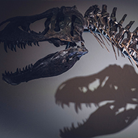
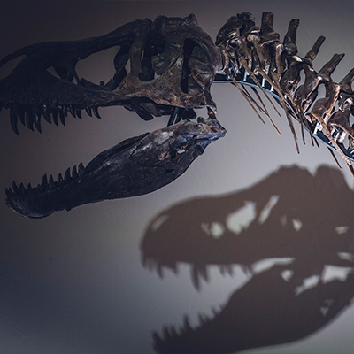
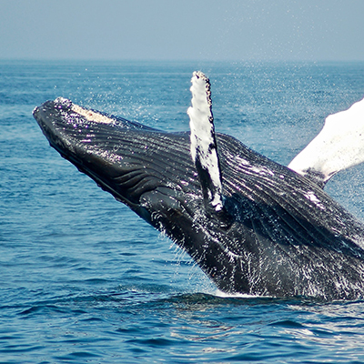
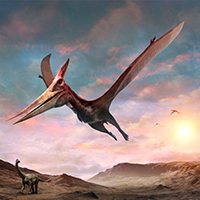
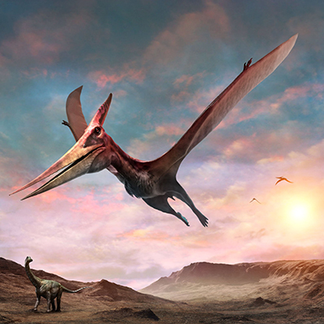
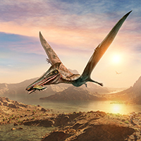
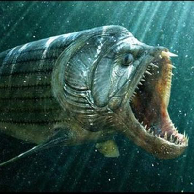
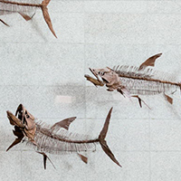
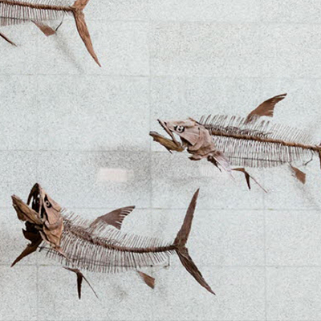

서대문자연사박물은 총 3개의 관으로 이루어져 있으며,
태초의 자연과 대자연의 역사 등을 만나보실 수 있습니다.
-

아크로칸토사우루스

전기백악기(1억1500만년~1억500만년전)에 생존했으며 몸길이 9~12m, 몸무게 2~4t에 달하며 알로사우루스과에 속하는 무서운 육식공룡으로서, 거대한 용각류 공룡도 죽일 수 있을 정도로 사납고 썩은 고기를 먹기도 했습니다. 머리뼈의 길이가 1.4m나 되며 턱이 튼튼하여 물어뜯는 힘이 대단했을 것으로 추측됩니다.
-
향고래

두뇌의 무게가 약 8kg(사람의 5배)에 달하는 포유동물입니다. 모계사회로 암컷과 어린 새끼들은 무리를 지어 생활하고 다 자란 수컷은 단독생활을 하는 경우가 많습니다. 약 90분간 호흡을 참고 3,000m까지 잠수할 수 있으며, 심해어류 및 두족류(특히 대왕오징어)를 주로 먹습니다. 위장에서 가끔 발견되는 '용연향(ambergris)'이라는 물질은 최고급 향수고정제로 사용되며 금과 같은 값어치를 지닙니다. 머리에 있는 '뇌유(spermaceti)'는 최고급 윤활유로 사용됩니다.
-

프테라노돈

“날개는 있으나 이빨이 없다”는 이름의 프테라노돈은 백악기 후기에 살았던 날아다니는 파충류였습니다. 6m가 넘는 날개를 가졌던 프테라노돈은 물고기, 연체동물, 게, 곤충, 죽은 동물 등을 먹었습니다. 프테라노돈의 화석 표본은 그 어떠한 익룡보다도 많이 발견되었는데, 과학계에 1,200개가 넘는 화석 표본이 보고되어 있습니다.
-

투푹수아라
투푹수아라는 하늘을 나는 파충류인 익룡 중 하나입니다. 트라이아스기 후기에서부터 백악기가 끝날 때까지 (2억 2800만년 ~ 6600만년 전) 생존했던 익룡은 척추동물 중 가장 먼저 날아다닐 수 있게 진화되 었습니다. 엄청나게 길어진 네번째 앞발가락과 발목 사이를 피부, 근육 등의 조직이 막을 구성해 이어 주어 익룡의 날개가 만들어졌습니다.
-
크시팍티누스

크시팍티누스는 주둥이에 발달한 큰 이빨 때문에 흔히 ‘불독 물고기’라 불립니다. 왜냐하면 위턱에 7.5cm 길이의 큰 원추형 이빨이 아래로 뻗어있기 때문입니다. 전체 몸길이는 약 3m~6m, 체중은 500kg 정도였을 것으로 추정되는데, 오늘날의 다랑어와 덩치가 비슷합니다.
-

파키리조두스

파키리조두스는 2m 정도 크기의 후기 백악기에 살았던 해양어류로 미국의 캔자스, 텍사스, 알라바마주에서 발견되었습니다. 5.8m 정도 크기의 크시팍티누스의 배 속에서 파키리조두스 뼈가 발견되어 크시팍티누스의 먹이가 되었다는 것을 알 수 있었습니다.